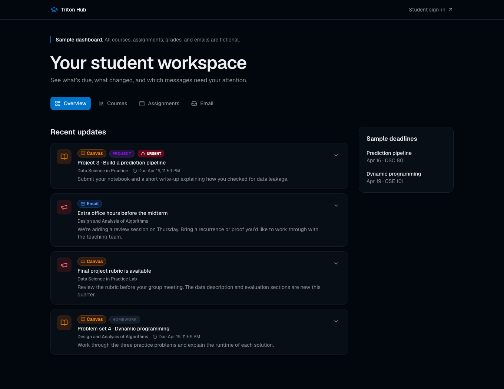

Triton Hub
Canvas assignments, academic email, and personal deadlines in one student dashboard.


The project
Student deadlines arrive in several places. Triton Hub brings Canvas coursework, announcements, academic email, and a personal calendar into a single workspace.
My contribution
I integrated live Canvas data into the assignment and announcement views, and built calendar event persistence and completion tracking with Supabase.
Context
Built with Rayirth Dinesh, Siddharth Maddikayala, and shrivassudharsan1.
The public demo uses sample data. Connecting a real student workspace requires separate setup.